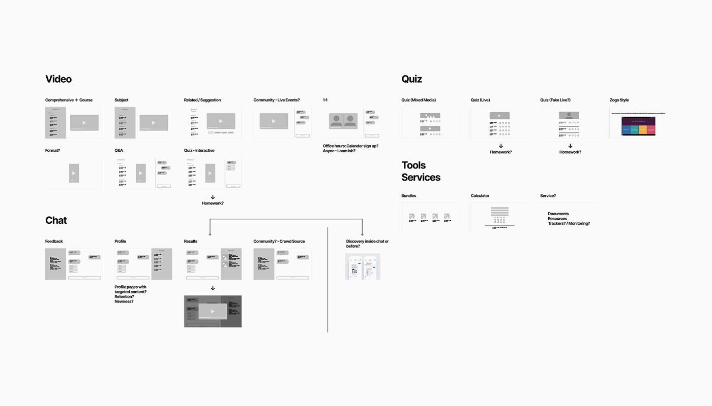
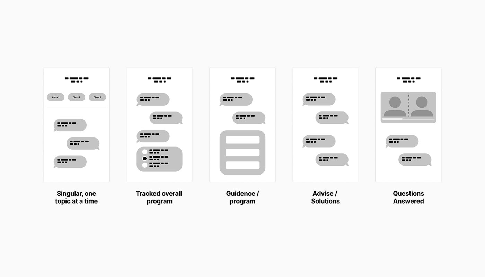
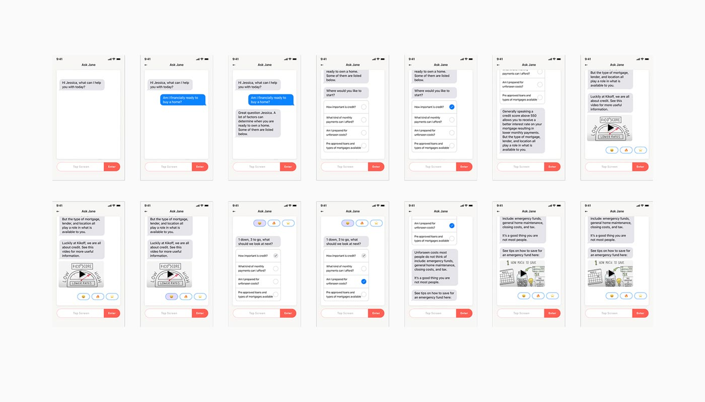
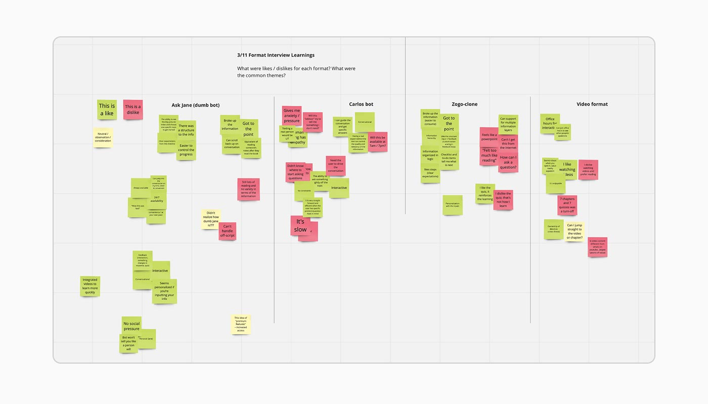
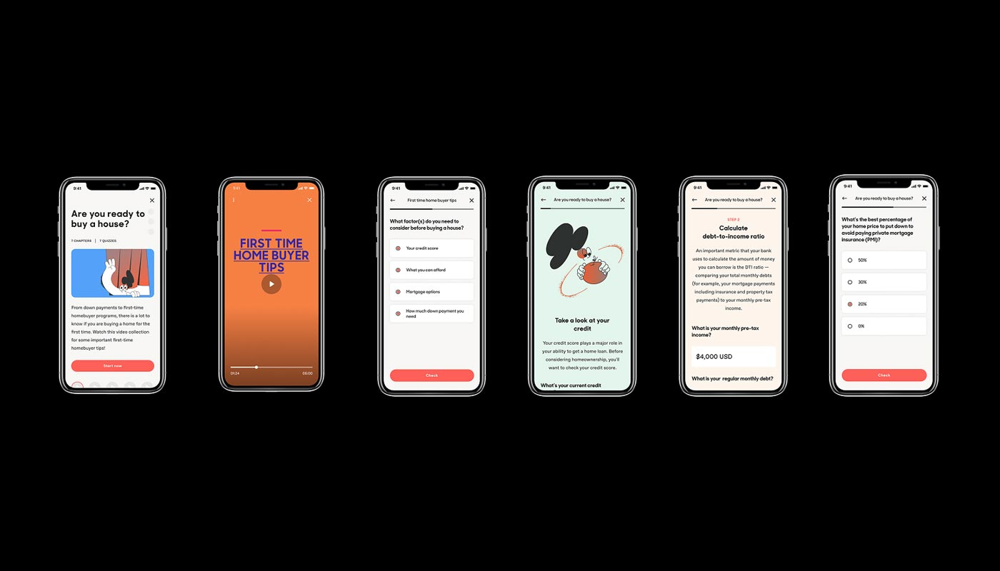
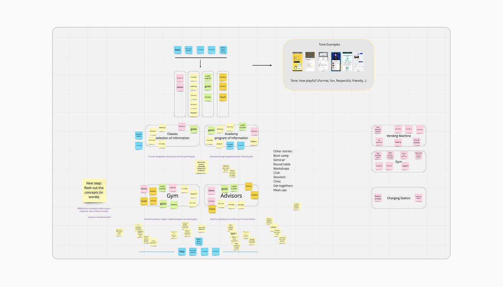
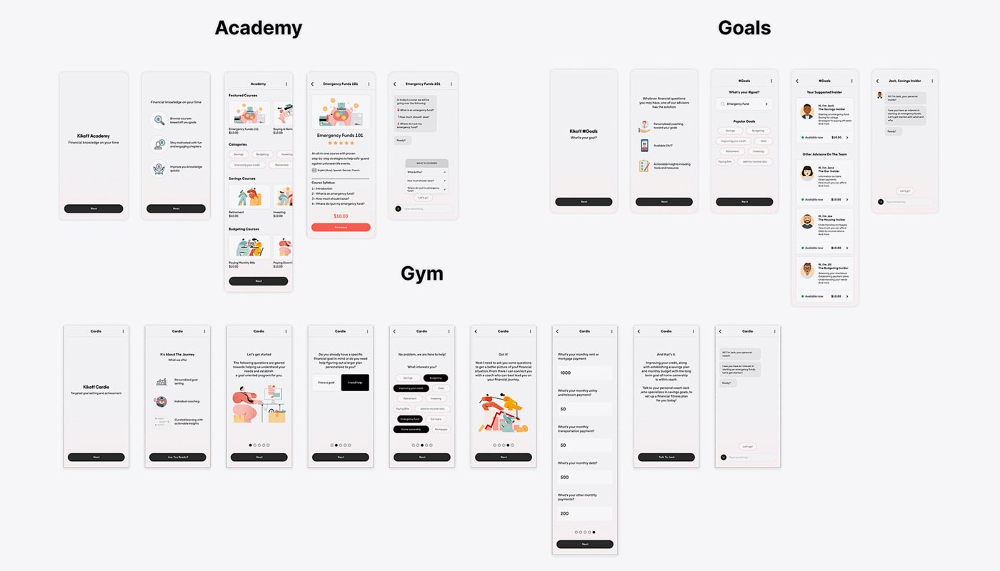
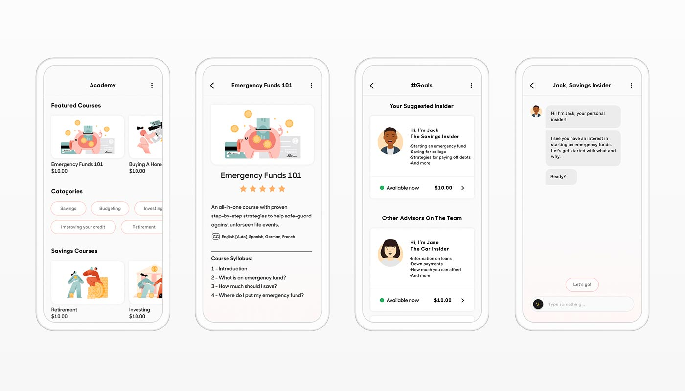

Reimagining a credit-building marketplace to drive engagement through interactive, modular learning experiences
40%
Kikoff lets users build credit through low-cost digital purchases that count as recurring payments. But the existing ebook store functioned as a placeholder to enable that mechanism, not to be useful on its own. Users found ebooks boring, lacked time to read, wanted relevant answers, and sought visible progress.

Exploration
Explored the full landscape of possible formats: Video, Quiz, Chat, Tools & Services to understand where engagement could live.

Chatbot Direction
Explored five conversational models, from singular topics to tracked programs, guidance flows, advisory solutions, and Q&A.

Prototype
"Ask Jane," a conversational prototype that guided users through financial topics like homebuying, surfacing relevant questions.

User Testing
Users valued the chatbot's personal feel and directness, but flagged speed, off-script limitations, and a desire for more interactive formats.

Quiz-Based Engagement
High-fidelity exploration of modular content with chapters, video, quizzes, and interactive calculators.

Content Strategy
Synthesized research into product concepts: Academy (structured courses), Gym (guided programs), Advisors (1:1 coaching).

Three Directions
Prototyped each of the mental models defined to find the right balance of structure and personalization.

Opportunity
Users valued specificity, which opened the door to domain-specific expert bots, each priced individually as a new revenue stream.